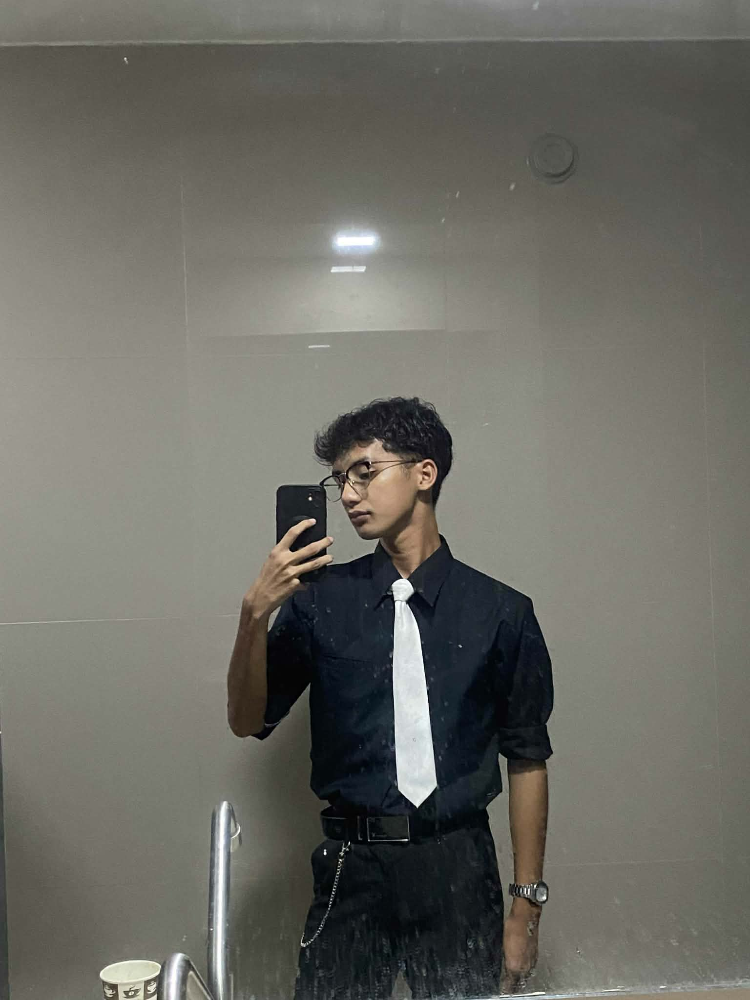

Gian Marco T. Bigornia
BSCA Student
Hi! I'm Gian Marco T. Bigornia, a first year BSCA student at MSU-IIT. I was born and raised in the Philippines. Growing up, I was always curious about how things work, which led me to explore various hobbies and interests.
I am currently pursuing a Bachelor of Science in Computer Applications at Mindanao State University - Iligan Institute of Technology (MSU-IIT). My passion for technology and problem-solving drives me to excel in my studies.
In my free time, I enjoy watching anime, playing video games, and drinking coffee. I also love spending time with my friends and family.
In the future, I aspire to become a successful software developer and contribute to innovative projects that can make a positive impact on society.